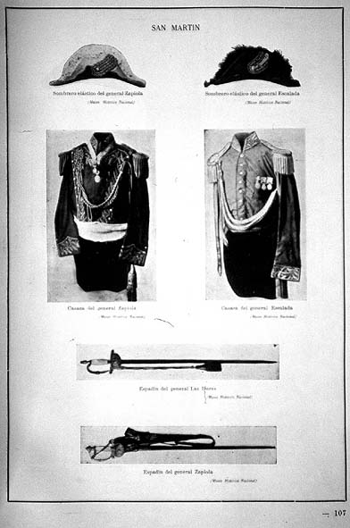

|
|  |
|
Uniformes del Ejército de los Andes
|
At the National Historical Museum, works of art were displayed in a largely functional, illustrative role, as part of a symbolic environment that also contained the physical relics of the events depicted, which in turn warranted the truth of the paintings' sublime vision. While the museum, then, sought to create an affective impact that could be immediately experienced even by uninstructed visitors (such as groups of school pupils and soldiers, for whom the museum arranged guided tours), illustrated catalogues were issued for the more studious ones, such that, as the author of the first guide to the museum, the historian Ernesto Quesada, put it, 'all the inhabitants of this country and all the scholars from abroad interested in Argentine history, may study in their cabinets its content and thus, on their visit, they will already know how to appreciate the diverse objects correctly.'
|